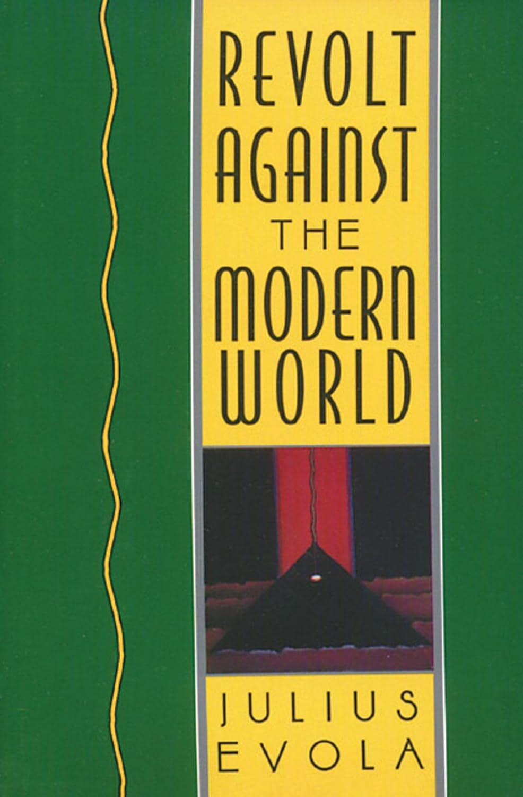

„Ниједна идеја није толико апсурдна као идеја прогреса, која је, заједно са својим пратећим појмом надмоћности модерне цивилизације, створила сопствене
‘позитивне’ алибије фалсификујући историју, усађујући штетне митове у умове људи и проглашавајући себе сувереном на раскршћу плебејске идеологије из које
је потекла. Да би се разумели и дух Традиције и њена супротност, модерна цивилизација, неопходно је започети од основне доктрине о двема природама. Према
овој доктрини постоји физички поредак ствари и метафизички; постоји смртна природа и бесмртна; постоји виши свет ‘бића’ и нижи свет ‘постајања’. Уопштено
говорећи, постоји видљива и опипљива димензија и, пре и изнад ње, невидљива и неопипљива димензија која је ослонац, извор и истински живот оне прве.“ -Из
првог поглавља.
Са непоколебљивим погледом и бескомпромисном жестином Јулијус Евола анализира духовну и културну малаксалост у срцу западне цивилизације и све оно што се
у модерном свету сматра прогресом. Као својеврсни провокатор, Евола никога и ништа не штеди у свом прегледу онога што смо изгубили и куда идемо. Понекад
пророчанска, понекад провокативна, „Побуна против модерног света“ излаже дубоку метафизику историје и показује како и зашто смо изгубили контакт са трансцендентном
димензијом бића. Побуна коју Евола заговара не личи на уобичајене протесте ни либерала ни конзервативаца. Његове критике нису ограничене на разобличавање
бесмислене природе потрошачког друштва, марша прогреса, успона технократије или доминације чистог индивидуализма, иако се и ове теме налазе под његовим разматрањем.
Напротив, он покушава да у простору и времену прати удаљене узроке и процесе који су извршили корозиван утицај на оно што сматра вишим вредностима, идеалима,
веровањима и кодексима понашања - светом Традиције - који чини темељ западне цивилизације и описан је у митовима и светој литератури Индоевропљана. Сагласан са
хинду филозофима да је историја кретање огромних циклуса и да се сада налазимо у Кали Југи, добу распадања и декаденције, Евола сматра побуну јединим логичним
одговором за оне који се супротстављају материјализму и ритуализованој бесмислености живота у двадесетом веку. Кроз свеобухватно проучавање структура, митова,
веровања и духовних традиција главних западних цивилизација, аутор упоређује карактеристике модерног света са онима традиционалних друштава. Обрађене области
обухватају политику, право, успон и пад царстава, историју Цркве, доктрину о двема природама, живот и смрт, друштвене институције и кастински систем, границе
расних теорија, капитализам и комунизам, односе међу половима и значење ратничког позива. На сваком кораку Евола доводи у питање најдраже претпоставке читаоца
о основним аспектима модерног живота.